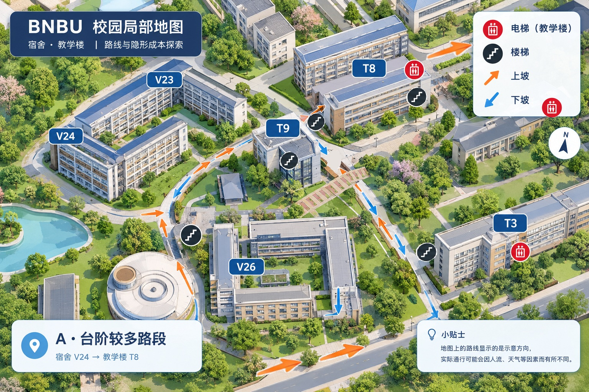

01 / BNBU 局部区域
点击地图放置新标记
黑圈：台阶
红色空心圈：教学楼电梯
➜橙色向右箭头：上坡
⬇橙色向下箭头：下坡
图面说明：V 字头为宿舍楼；T 字头为教学楼。截图里已有的箭头、圆圈和文字是底图的一部分，暂时不会被单独编辑；你在此页面新加的标记可撤销、导出。
已按你的说明保留 V 字头宿舍楼、T 字头教学楼，以及台阶、电梯和坡向的人工标注。现在可继续点击地图添加结构化标记，再导出 JSON 作为后续游戏的数据。现有截图中的标记属于图片内容；新增标记会单独记录。
